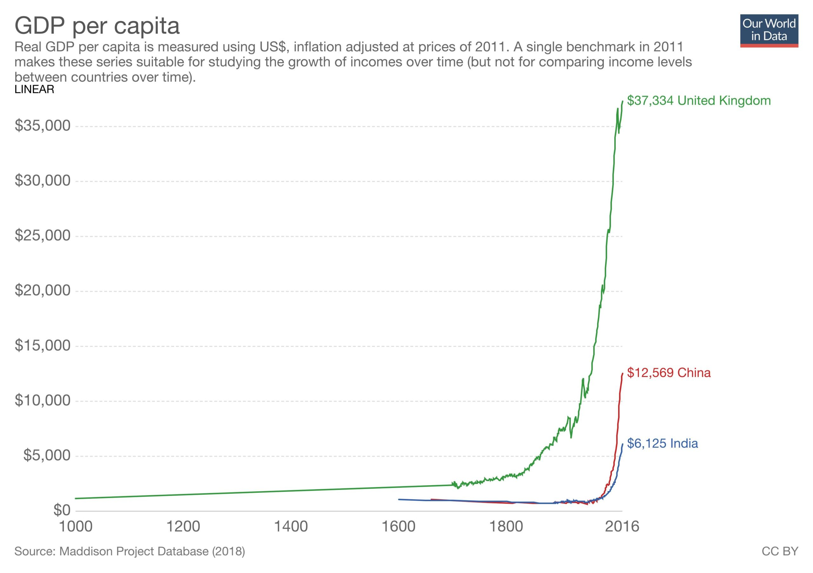

Slightly updated from its being published at the Mandarin.The catastrophe of Victoria's resurgence of COVID is a lesson in non-linearity. This reminds me of Paul Romer's recent comments to the effect that, since economists have foisted cost/benefit analysis on others as a one size fits all means for thinking through decisions, they might try to focus some of it on their own contribution. As he puts it:
There is a clear logic to cost-benefit analysis that is obvious to economists when they impose it on others. Like it or not, this same logic still applies when we are the subjects. Among its implications:
-
- Intentions do not count.
- You can’t justify a collection of activities by cherry-picking a few that are beneficial.
- Nor can one count wins and loses and declare victory if there are more wins. A few instances of massive harm can outweigh many contributions that yield small benefits. The only meaningful way to calculate net benefit is to put dollar values on all the successes and all the failures, then do the math.
- Finally, no one gets a free pass by claiming that estimates of costs and benefits are uncertain. Remember, we economists were the ones who told everyone that we could improve the analysis of health and safety regulations by putting a dollar value on a lost life. If an uncertain value for a life is revealing, so too is an uncertain estimate on the cost from a careless approach to financial or an intellectual movement that provided cover for large firms that want to stop enforcement of antitrust law.
If economists turned this unforgiving lens on themselves what would they find? As Romer points out, asking such questions leads to Andy Haldane's work which puts the total global cost of the GFC at between $50 and $200 trillion. Based on this, Romer concludes that economists did more economic harm than good, even despite the large benefits their reform brought, the two examples he cites being:
- Better counter-cyclical monetary and fiscal policy now relative to the 1930s; and
- The adoption by many developing countries of policies that supported both the market and international trade.
Meanwhile, in Victoria, everything was going along swimmingly when employees of contracted out security services in charge of hotel quarantine for travellers returning from overseas thought it would be good to have sex with those they were guarding or so we are told – the details haven't been made clear. Who would have thought that contracted out services for such an important task wouldn't be up to snuff? Perhaps the same sort of people who look for additional things to contract out before building some plausible means for understanding what they're doing. And so, within a few weeks, we have record daily infections and much deeper community spread than previously. One factoid I've seen bandied about is that Victoria's lockdown is costing around $1 billion per day. So it makes the idea of skimping on the hotel quarantine (saving money or simplifying requirements) look pretty stupid. Complacent even – and I'm reliably informed by our medical officials that now isn't the time for complacency. This has brought the focus back onto the question to which I've drawn attention from the get-go – that between suppression and eradication. If eradication is possible, we should be prepared to pay a high premium for it, precisely because we can now see the difference in cost between nearly eradicating the virus and fully eradicating it and keeping it eradicated. This was always the case, but the first time around I watched one press conference after another in which officials and politicians following their advice simply assert that eradication was unrealistic while we – ahem – eradicated the virus. Nearly eradicating it, or rather eradicating it and then bungling keeping it eradicated looks like being pretty much the most expensive option of all. And yet as we eradicated it, everyone couldn't wait to ease the restrictions. They were reassuring us of simple – dare I say fairly linear – trade-offs between our health and our economy. I'd have been more conservative perhaps easing up a week later than we actually did. But eradication was successful. But our bungling, once we'd eradicated the virus now, sees us incurring all those costs again. Will we do it again after we do it this time around? That seems to be the plan. The PM is again dichotomising the economy and health. Naturally, if there are trade-offs we should try to consider them carefully. But if there are non-linearities, those trade-offs are probably illusory, particularly considering fat-tailed risks of catastrophe – of us bungling again. It's arguable that because of the incompetence of the Victorian effort, it may no longer be cost-effective for Victoria – and perhaps therefore for Australia. But with the question of eradication finally properly on the agenda, the official epidemiological establishment, all having moved up one since the ascension of the first of our muddleheaded medicos – Chief Medical Officer Brendan Murphy – into the Health Secretaryship. Now newly-minted Deputy Chief Medical Officer Nick Coatsworth is taking up the cudgels against eradication and explaining his proposed alternative – 'aggressive suppression'. But because the exponential growth of the virus generates non-linearities in spades, guess what the goal of 'aggressive suppression' is? It's eradication. Always and everywhere. So it's unclear how it's different in practice in any specific situation. The only difference between the two strategies that I can divine is the optimism with which one hopes to join up places in which eradication has been achieved and then keep them all clean of the virus. Given this, why all this angst about eradication? It's hard to say, but throughout this process, the authorities have continually assured us that eradication was unrealistic – just as they assured us that wearing masks was silly. So perhaps they're just saving face. Certainly they clung to it as New Zealand's official medical advisors changed their advice when they realised the differences between coronavirus and the flu on which all the standard advice had been predicated. They clung to their abhorrence of eradication as New Zealand eradicated the virus – and as we did! Coatsworth now tells us that eradication can produce complacency by diminishing "community engagement with widespread testing" and leading to "a downsizing of the enhanced public health response". But the public health response should be eased and transformed as eradication is achieved. That was the official advice last time and we'd do again as we should. We can scale back lockdowns and testing and re-focus our efforts on vigilance at the border and secondary defences in case border controls are unsuccessful. Are they growing complacent of this in New Zealand? In all this, I'm afraid I see a deeper pattern. As I’ve complained for over five years now, the RBA has been setting the cash rate as the muddleheaded medicos have been advising on masks. In hindsight the RBA was obviously wrong not to cut rates more aggressively. But anyone can be wrong in hindsight. My criticism has always been that they made their case not with careful argument – perhaps supported by some back-of-the-envelope models to help clarify and communicate that thinking – but with back-of-the-pants hunches which were then defended with whatever data and arguments came to hand. In this spirit, Coatsworth tells us that "The WHO has recently confirmed its view that elimination and eradication are unrealistic goals". Really? Is it unrealistic for New Zealand? Forgive me, but all I can think of is that this would be the same WHO that told us not to bother with masks. Oh, and masks with which we might have spared our economy hundreds of billions in costs if we'd adopted them from the get-go as the Czech Republic did, will be compulsory for all Victorians from Wednesday night.
Not just for the Kiwis what about WA, SA,Qld, NT and Tassy.
At some point we could even need for a standstill. why? Chronic disease will be shown to more serious than initially understood possibly even being fatal. Immunity will be very short term even from immunisation. People will prove to be unreliable about maintaining safe practices that minimise transmission. The economy will be damaged beyond the routine methods of government help. Finally, the population will realise politicians and their public servants are not acting in their best interests. We ignored the advice of the Czechs , the East Asians and NZ’s efforts because political priorities were preferred to the general public’s s acute health risk.
Nicholas
Feel that elimination vs suppression is a false opposition . Both approaches need a lot of ducks to line up.
Several months ago I began to think about the similarities between viruses and wildfire , because I was reminded of a long dispute over how best to approach wildfire that can be caricatured as: ‘all fire is bad fire; it should all be suppressed’, versus ‘some fires are good; we should act to mitigate but not suppress’. One of the things that the two positions have in common is that, historically, in practice, neither approach has ever worked perfectly in Australia.
Elimination would need more than just paid sick leave for casual workers, it would need the virtual shutdown of many essential industries for indefinite periods and even then it still only needs a few ‘randy’ guards or a government stuff up somewhere and it’s off again.
Long term suppression would need a degree of sustained vigilance and luck that’s also unlikely.
Returning to the fire analogy I believe the reason why the dispute re approaches to wildfire has been so persistent, is because its more strongly linked to identity, than to reality.
Thanks NG. From OP;
NG- "Naturally, if there are trade-offs we should try to consider them carefully. But if there are non-linearities, those trade-offs are probably illusory, particularly considering fat-tailed risks of catastrophe – of us bungling again."
NG - "Given this, why all this angst about eradication?" Excellent question.
"Nassim Nicholas Taleb on the Pandemic
Jul 27 2020
Nassim Nicholas Taleb talks about the pandemic with EconTalk host Russ Roberts. Topics discussed include;
- how to handle the rest of this pandemic and
- the next one,
- the power of the mask,
- geronticide, and
- soul in the game.
Nassim Nicholas Taleb on the Pandemic
Jul 27 2020
Russ Roberts: So, in the case of wearing a mask, if we all--and we'll get to masks in more detail because we've come to a moment in American [ and itnseems Australia] history deeply depressing to me, where wearing a mask has become a partisan, ideological issue rather than a scientific issue.
But, the point is, is that wearing a mask has external effects that are beneficial. It's like being a nice person. You bear a very small cost. It is uncomfortable and hot. And, by doing so, you reduce the chances that you are asymptomatically spreading a deadly disease to, potentially, as you say, dozens of people.
Nassim Nicholas Taleb: Yeah. Yeah. So, it becomes a duty, sometimes, to act against your own interest--
Russ Roberts: A moral imperative--
Nassim Nicholas Taleb: It's a moral imperative. And, masks are the cheapest. I mean, think about it. You're inflicting huge economic cost by not wearing a mask. Because--I've computed a few things about convexity of masks and errors made by bureaucrats, initially. Because initially the World Health Organization [WHO], the CDC [Centers for Disease Control], all these people were against mask-wearing.
And, we said there were two things they did not figure out. The first nonlinearity, the first one, is they didn't think--again, they don't scale--they did not think that if I wear a mask and you wear a mask, we're not reducing the risk by P, the protection, by a mask, but by P-squared. See?
So, the idea--so, for example, if I have 50% probability of being infected wearing a mask, and you have 50%, the total would be .25. So--but, there's another thing people did not pick up. And, we saw it in a lot of papers. And, that is even more central: that, if I reduce the viral load by half, I don't necessarily decrease the probability of infection by half. I may decrease it by 99%--
Russ Roberts: Right. And, there may be a threshold level.
Nassim Nicholas Taleb: because of convexity--
Russ Roberts: A threshold level.
Nassim Nicholas Taleb: There is an S-curve. So, if you're in a left side of the S-curve, it must be that you're convex. Everything is convex initially, and then concave at the end. So, that's the nature of the S-curve.
So, these are the things that were missed by people who analyzed masks, initially, scientifically. They just looked at viral load reduction. "
...
Nassim Nicholas Taleb: the ancient world--people coming from the ancient world--Babylonian, Egyptian, Mediterranean, Greco-Roman--they had values that, basically, for them, geronticide is never an option. Never.
So, would you, would you, would you--if I give you a thousand dollars, would you kill your grandfather? Of course not. Now how about if I give you a billion? Okay. So, now let's negotiate. So, this is Northwestern European society.
Russ Roberts: Which?
Nassim Nicholas Taleb: Making claims, utilitarian claims--something, someone, infected Northern Europe with these, this calculus of, 'Yeah, no, if we let old people die, it'll save us xin economic terms.' That's not a question that you're allowed to ask in a classical society. It's offensive.
Russ Roberts: There's no trade-off.
Nassim Nicholas Taleb: I find it offensive."
[Me too!]
https://www.econtalk.org/nassim-nicholas-taleb-on-the-pandemic/#audio-highlights
Any here ever used the law of medium mumbers?
The Law of Medium Numbers (of which I was ignorant ) coined by;
https://en.wikipedia.org/wiki/Gerald_Weinberg
Absolutely stunning reviews of Weiberg's book 'An Introduction to General Systems Thinking'...
https://geraldmweinberg.com/Site/General_Systems.html
https://thescribestore.com/products/statistical-consequences-of-fat-tails-by-nassim-taleb
If we had really tried we could perhaps have followed Mongolia.
https://kottke.org/20/05/the-country-with-the-best-covid-19-response-mongolia
There's a whole lot of this sort of "analysis" going on right now, and a lot of people are either unclear on their values or unwilling to discuss them in public. Which makes it really hard to have honest discussions. In that sense Paul Fritjers is worthwhile because he's upfront that he'd kill thousands of Australians for a small chance to save a trillion dollars. Our leaders, OTOH, aren't. From minimising climate change to reforming the criminal system, if you're not open about your goals you can't estimate the costs.
John, but a lot of those ducks will happen anyway. Look at the Swedish shutdown, for example. If you wanted to *prevent* that you'd have to go further than even the USA has wrt forcing people to go to work, go shopping etc.
The real question appears to be: do we coordinate what people are doing in an effort to get the best result, or do we prevent people succeeding by getting the government response wrong. I can't really express how angry I am that the governments in Australia have fucked up their response despite the best efforts of a great majority of Australians.
Moz Feel that there is no clear best option. Nothing ever works perfectly- we on the whole have done as best as we at the time could do.
BTW Moz History shows that when governments adopt elimiation as a stated policy ( rather than a implied hope) then the instinctive response of goverment to evident faliure is to dig deeper. Classic example is it took about a decade for the US to admit to themselves that their policy of eliminating communisum in Vietnam ( the hoplessnes of which was evident as early as 1964) was a faliure
Moz re extremely well behaved ducks, even Vietnam - zero deaths to date ,has not been able to eliminate Covid19. They are currently evacuating Danang .
I think reasonable people can disagree on that. Prevaricating for a couple of months then dithering seems poor to me, but then I'm not Scott Morrison - maybe that really is the best he can do.
Normally in a crisis leaders aim for clear direction and cooperation, but apparently not in Australia. There's a saying about doing the right thing after exhausting all other options that isn't entirely accurate here, but does seem to be an aspirational goal of many Australian governments.
I freely admit to being biased here, I looked at the best responses around the world at each stage I tried to do that personally, while I looked to my government to
lend a helping handat least provide a bit of clarity. Instead we got the cruise ship in Sydney along with a bunch of arguments and contradictory guidance.Moz
we restricted arrivals from China well before the WHO recommended it.
The fuckups re the cruise ship and the Melbourne hotel quarantine guards are regrettable but not that surprising, nobody is perfect even 90 percent of the time.
Isolating the crew of for say a distribution centre is easy , but supplying enough replacement trained forklift drivers for that same center is nothing like so easy.
Quite a few of my friends and acquaintances are gay have been living with another pandemic for a long time( and a cure is still , someday).
It’s tempting to judge and sheet home blame.
One of them recently wrote this about Covid19 and the greatest ever poem about , shit happens:
“Yet throughout his ordeal Job’s virtue remains essentially intact, a fact that is never by any means lost on God. Job weathers the storm. He struggles against what he sees as its moral dimension, but in the end he survives. He is brought to an understanding of what he is, and what he is not, and, even in the extremity of his affliction, Job attains what these days we would probably call “acceptance.” He never fails to worship God: “I know that my Redeemer liveth” (19: 25). There’s a lot more to it than this, and in any case my reading is merely that of an interested amateur. For the professionals, however, Job is a philological gold mine. As an aggregation of exceedingly ancient Hebrew texts, with many important lacunae, variants, emendations and textual difficulties arising from occasionally conflicting manuscript “witnesses,” you still have to ask yourself: Who on earth wrote this extraordinary poem? Alfred Tennyson thought it was the greatest of all.”
While wearing a mask doesn’t bother me least apart from, I cannot use my glasses at the same time too much fogging, can’t see where I’m going.
It does seems that evidence one way or the other re masks is a bit thin on the ground.
https://www.cebm.net/covid-19/masking-lack-of-evidence-with-politics/
“ It would appear that despite two decades of pandemic preparedness, there is considerable uncertainty as to the value of wearing masks. For instance, high rates of infection with cloth masks could be due to harms caused by cloth masks, or benefits of medical masks. The numerous systematic reviews that have been recently published all include the same evidence base so unsurprisingly broadly reach the same conclusions. 2 However, recent reviews using lower quality evidence found masks to be effective. Whilst also recommending robust randomised trials to inform the evidence for these interventions. 5
Many countries have gone onto mandate masks for the public in various settings. Several others – Denmark, and Norway – generally do not. Norway’s Institute for Public Health reported that if masks did work then any difference in infection rates would be small when infection rates are low: assuming 20% asymptomatics and a risk reduction of 40% for wearing masks, 200 000 people would need to wear one to prevent one new infection per week. 6
What do scientists do in the face of uncertainty on the value of global interventions? Usually, they seek an answer with adequately designed and swiftly implemented clinical studies as has been partly achieved with pharmaceuticals. We consider it is unwise to infer causation based on regional geographical observations as several proponents of masks have done. Spikes in cases can easily refute correlations, compliance with masks and other measures is often variable, and confounders cannot be accounted for in such observational research. “
As for the proportion of completely asymptomatic infections, that seems to be anybody’s guess :could be anywhere between 5 percent and 80 percent
https://www.cebm.net/covid-19/covid-19-what-proportion-are-asymptomatic/
As best as I know smallpox is the only major viral disease that has been completely eradicated.
John, you're using very loose arguments. If you want to appeal to Vietnam, I can appeal to appeasement in the 1930s – yawn.
I was appealing to the idea of being clear in our thinking and our expression. I'm afraid I don't like your idea that independent officers should somehow second guess political processes and, in so doing completely entangle the truth with the expedient and some notion of higher political prudence. If you were to argue it carefully it might be an interesting argument, but Vietnam and Job don't do it for me I'm afraid.
If public comment by Coatsworth or anyone else on the question of elimination can cite the WHO arguing against elimination without mentioning out specific circumstances regarding it – i.e. without mentioning New Zealand and our own near elimination – then it's not turning up.
A clear focus on elimination would have had the rest of Australia closing its borders to Victoria immediately things started getting out of hand. Would that have been good or bad. That's what has to be argued on the merits. Right now there are lots of exceptions being made on an ad hoc basis. Whatever you want to call these things – suppression or elimination – these are the questions we need to reflect on. But that's not what these clowns do.
They don't like the idea of closing state borders. I've actually heard them say that this is because they're 'national' officers. But they support local lockdowns. So you need to square up these ideas. You need to think about them and follow the arguments through. I'd be interested in any case they'd make against closing state borders. But they don't actually make it. They make it with slogans like 'aggressive suppression' versus elimination. That's not a strategy. It's not anything much. It is, not to put too fine a point on it, waffle. More waffle.
If the Deputy Chief Medical Officer from the Commonwealth wants to support 'aggressive suppression' or whatever the damn hell he calls it, then let him focus on a clear expression of
1) how the operationalising of this brand new concept differs from the operationalising of alternatives
2) the likely costs and benefits of the alternatives
3) and do so for our circumstances. Victoria's, the other states and the nation
4) then make some conclusions based on that.
If you don’t do that you may as well be chewing the fat in the pub.
Nicholas
Feel that the counter factual is : short of a vaccine we can delay and to some degree mitigate but in the end that’s all. The chances of elimination (for more than a few weeks) are very low and the chance for a vaccine strong enough for eradication - i.e. extinct in the whole wide world must be close to zero.
In short elimination and suppression have something in common , neither is likely to work perfectly. Making promises that you probably can’t keep is not a good idea.
Re closing borders think it’s easier said than done.
The virus is very infectious but in quite a few cases ( possibly as much as 80 percent) it causes no symptoms so it can spread unnoticed .
For example two women a few weeks ago ‘misrepresented’ to the Qld border checkpoint and have resulted a new cluster around Brisbane. People have been caught hiding in car boots, we don’t know how many have slipped through -there are a lot of rough backroad tracks.
There is a school in albury wadonga that literally has its junior and senior campuses (and staff) on different sides of the border.
Expecting fit single 30 year olds to live like solitary, celibate monks for god knows how long is in itself a fairly large project .
There are plenty of essential industries where paid sick leave won’t be enough to keep them going.
And the constitutional issues re border closures are also I gather possibly real. After all it apparently was constitutional issues that prevented Sweden from mandatory lockdowns.
Do you know anybody who specialises in constitutional law?
Sweden not the way to go.
It is the Grattan Institute at the conservation if not it is at my modest blog.
If only Gigi Foster had known this??
This 80% number is less and less believable. There are now reports that over 50% of people in some India slums having antibodies. If this is the case, then the most that could have got it and not developed antibodies is less than 50%. So this is similar to the NY data from heavily hit areas. People will need to explain why the people in these areas show antibody effects, and in other areas they don't.
Also, the Norway mathematics on masks is misleading. Try doing the maths if, say, 500 people a day are getting it and masks stop 20% of transmissions. Then calculate the number of cases needed before governments re-open cities. You will get a nice curve where it does a make a difference. The other real problem with randomised control studies is that they are contextually specific. Masks are sure to have a smaller effect in low density areas than high density ones. So in reality there is never going to be in perfect study saying they work or not and estimating the reduction, they are just measures that we use because they are likely to work and cost very little.
I agree with you on the non-linearity here NG, and would also add to that the asymmetry of the situation. It's one that the general public I think grasps easily. If I have an unauthorised overspend in my assigned budget at work by 5%, I might expect to be reprimanded or fired; if I underspend by 5% that's not likely to be livelihood threatening. Similarly public health parameters which give an R0 of 0.95 create a manageable but improving situation; an R0 of 1.05 is a steady escalator towards calamity. Why public health officials haven't staked out this more cautious side of the argument (especially in the absence of perfect, pandemic-specific contextual evidence)
but allowed the supposed 'save the economy' views to steamroller is a bit weak.
I have some time for the view in the early months that public mask mandates could have impacted supplies for medical facilities, but 6 months into this mess that's no longer an excuse.
+1
Even today in NSW mask-wearing isn't mandatory on public transport.
What a farce.
Conrad is that 50 percent of those tested or of the whole population ?
Masks must surely make some difference and are no big deal. The need for masks seems unavoidable, The AFR reports “ Mr Andrews said that New Zealand-style stage four restrictions, which closed all workplaces other than those deemed essential, were unlikely as almost all the workplaces that are suffering COVID-19 outbreaks would likely be deemed essential under such rules. These workplaces include aged care homes and abattoirs.”
BTW
Seems to me that before you can do elimination you first need to be able to do suppression really well.
Conrad I think they meant that somewhere between 5percent and 80 percent of those testing positive had no symptoms.
Yes I think you are correct on that.
I also don't see suppression and elimination as so different in practice incidentally (ignoring full lockdowns). In this respect, I wonder how different strategies for suppression and elimination really are if you consider the mildest restriction that would lead to elimination and what is necessary for suppression, especially in places like Australia, where, as we've found out, you need to be tough enough to stop what we are seeing in Victoria now.
Even in NSW, which is just trying to suppress things right now, you could probably do a few things for a few weeks which wouldn't be too annoying and move to elimination. The main difference here would be that elimination requires one last probably not very expensive step, but all the stuff before that seems or less the same.
Conrad
Completely sealing the border with Victoria is probably impossible. So NSW ultimately still depends on Victoria successfully suppressing its outbreak.
If we can get the trickiest component ,the bit most prone to critical failures I.e. suppression to work properly: suppression , then they can move on to elimination.
Conrad
May be of interest.
A shirt load of data on excess deaths for the Eu has just been released ( minus Germany ,who prefer accuracy to speed).
https://www.ons.gov.uk/peoplepopulationandcommunity/birthsdeathsandmarriages/deaths/articles/comparisonsofallcausemortalitybetweeneuropeancountriesandregions/januarytojune2020
zilla says:"Why public health officials haven’t staked out this more cautious side of the argument "
Peter Doherty, when asked back in early March "what would you do" replied -my paraphrase - ' lock everyone down until a vaccine', followed by "but not really feasible".
Had Doherty been in charge I'd say wed have eliminated by now.
Also the cautious voice has probably been heard, just not in public.
Re caution :
if 'lock down everyone' was imposed for months and months and it failed to completely eliminate the virus then the consequences for moral and public order could be catastrophic.
Elimination needs a lot of things to work near perfectly and the odds are the virus or some variation on it will be at large in the world for years to come.
Back in June I thought we had a real chance of effective elimination, but events since then have shown how little it takes in the way of the failure of a few small but critical components to set it off again.
Feel that paradoxically elimination as a strategy increases the risk of complacency.
Nicholas
the following is from
HIV JUSTICE WORLDWIDE Steering Committee
Statement on COVID-19 Criminalisation
Communicable diseases are public health issues, not criminal issues: what we have learnt from the HIV response
"Feel that paradoxically elimination as a strategy increases the risk of complacency"...
... in some cohorts, particularly if support not timely, comolete and univeraal.
Tricky.
I am trying to get this applied to historical flowering records - hardly any - as in 'ice cores' for plants response to climate.
Ecology > social > economics? They are all messy and non linear.
Fuded by VW trying to atone for dieselgate? Caution yetncode and data avail so my be of interest to others.
"Forecasting unprecedented ecological fluctuations
Samuel R. Bray, Bo Wang
..." Empirical evidence and theoretical analyses suggest that these dynamics are in a regime where system nonlinearities limit accurate forecasting of unprecedented events due to poor extrapolation of historical data to unsampled states. Leveraging increasingly available long-term high-frequency ecological tracking data, we analyze multiple natural and experimental ecosystems (marine plankton, intertidal mollusks, and deciduous forest), and recover hidden linearity embedded in universal ‘scaling laws’ of species dynamics. We then develop a method using these scaling laws to reduce data dependence in ecological forecasting and accurately predict extreme events beyond the span of historical observations in diverse ecosystems."
Code for the analysis and plotting of data is available at the Github repository:
https://github.com/samuelbray32/ecologicalAvalanches.
Received: December 17, 2019; Accepted: June 5, 2020; Published: June 29, 2020
Funding: This work is funded by Volkswagen Foundation (No. 94819). SRB is supported by a NIH CMB training grant (T32GM007276). BW is supported by a Beckman Young Investigator Award. The funders had no role in study design, data collection and analysis, decision to publish, or preparation of the manuscript.
https://journals.plos.org/ploscompbiol/article?id=10.1371/journal.pcbi.1008021
Sounds a tad like the ideas behind D'Arcy Wentworth Thompson's "On growth and form"
BTW
This might be of interest :
Late Cainozoic history of vegetation, fire, lake levels and climate, at Lake George, New South Wales, Australia
The lake George core samples are some of the best long term, uninterrupted records we have in Australia. After about 130,000 to 1200,000 years ago the cores show a major increase of fire frequency and a shift in pollen away from fire sensitive plants towards fire loving plants such as eucalyptus . Its possible that that change was due to lightning strikes becoming more common in the area but Im inclined to feel it shows that humans had arrived.
timely, complete and universal is very tricky indeed.
Engineering starts on a pragmatic assumption: such perfection is not possible and therefore designs-builds accordingly.
Feedback both; that part is not working as we expected, better have another go and; feedback as in the operator knowing 'the engine is overheating' well before it melts is close to the heart of engineering just about anything.
Victoria's three most disadvantaged communities accounted for 10 per cent of police fines issued for failures to comply with COVID-19 restrictions.
Residents in the Central Goldfields Shire and the cities of Greater Dandenong and Brimbank were handed a combined 529 fines by police over the first two months of restrictions, according to an interim report assessing the state government's response to the pandemic.
https://www.theage.com.au/national/victoria/more-covid-19-fines-for-victoria-s-most-disadvantaged-areas-20200804-p55iip.html
It’s probably unavoidable even desirable that policy and government is run by the likes of us: fairly well of ,oldish (and mostly male).
However that makes this seem to me all the more sharp :
“Be careful not to practice your righteousness in front of others to be seen by them. If you do, you will have no reward from your Father in heaven.
So when you give to the needy, do not announce it with trumpets, as the hypocrites do in the synagogues and on the streets, to be honored by others. Truly I tell you, they have received their reward in full.
But when you give to the needy, do not let your left hand know what your right hand is doing, so that your giving may be in secret.
Then your Father, who sees what is done in secret, will reward you.
From the Guardian
https://www.theguardian.com/australia-news/2020/aug/04/we-are-all-breaking-down-in-here-melbourne-towers-residents-too-traumatised-to-go-outside
Daniel Reeders, a health promotion expert with experience working with culturally and linguistically diverse communities in Melbourne, said Victoria was still not doing enough to prevent further infections.
“Cleaning companies with causal workers are working to targets and have to do a cursory job of the cleaning in the towers to meet those targets, and I’m aware of community members seeing this and raising it and not getting a response,” he said.
“And then a curfew coming into effect on the same day as the press conference, with no equivalent media outreach for residents in towers and other linguistically diverse communities, is concerning.”
Mohamed said all the hand-sanitiser dispensers in the towers needed to be replaced because the department had found them to be faulty. There were no infection control measures in laundry areas that had been reopened, he said.
He had asked the department several times for its infection risk management plans but had received no response.
“I spent a year and a bit working in aid overseas,” he said. “We did things overseas I never thought I’d do in Australia. But I’ve been using triage here I was taught to use in war zones. And I’m using those wartime strategies on residents in the middle of Melbourne.
“We are treated like we know nothing, like we need things done to us or we won’t comply. But we know about infection control. I’ve seen what infectious diseases like malaria can do. I have family overseas who have had it. But no one gives a shit about us. The rest of Victoria is experiencing a small fraction of what we have been facing.
If you can’t properly do a containment line , you’ve got no hope of doing elimination. https://www.theage.com.au/politics/victoria/leaked-emails-show-victoria-s-hotel-quarantine-system-was-stretched-cobbled-together-20200804-p55ih1.html W , T, F really are the letters for this year.